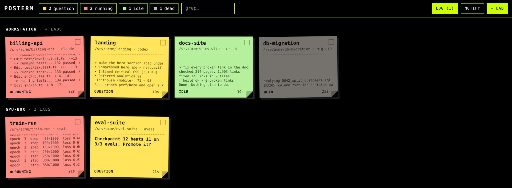
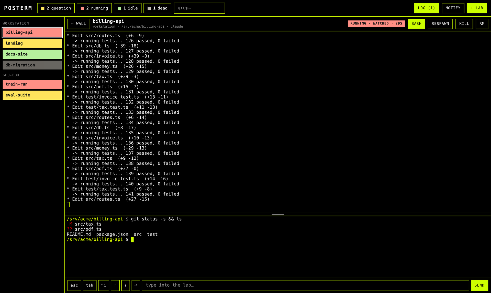
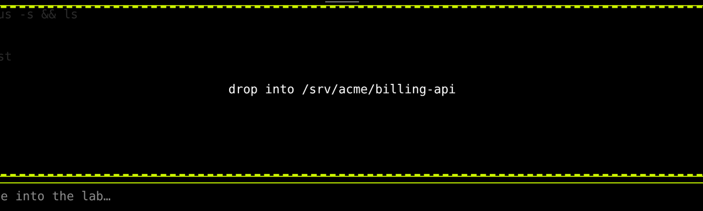
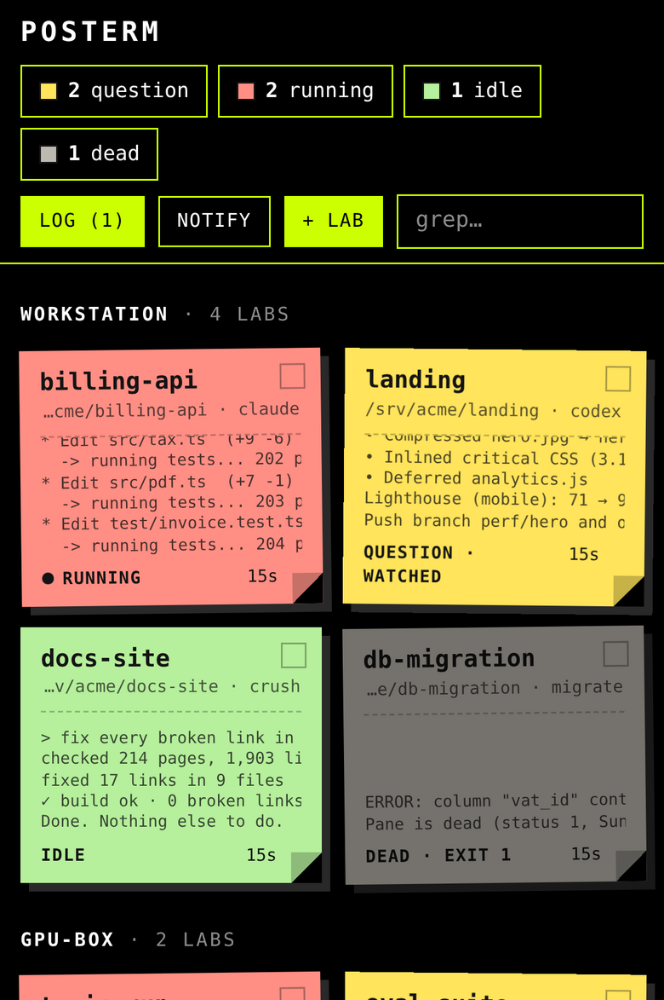
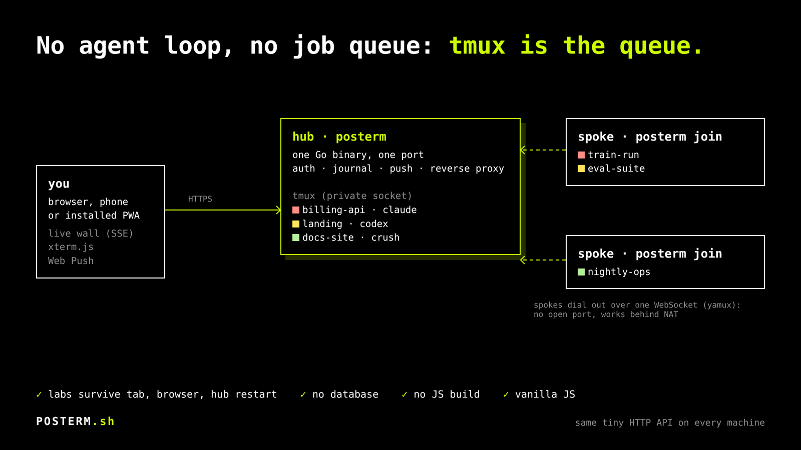

post-it + terminal = POSTERM
An agent job is a terminal that runs on its own.
That's it. That's the whole idea. claude, codex, crush or plain bash run in tmux, because tmux solved persistence decades ago. POSTERM puts all of them on one wall you can read in half a second, from your desk or your phone.
curl -fsSL https://posterm.sh/install | shLinux and macOS · one static Go binary · installs tmux if it's missing · read the script first: every step is commented.

01 · the problem
A dozen tabs, and the one stuck on [y/N] is the one you didn't look at.
Run more than three coding agents at once and you know how it goes. So: every job is a lab, a directory plus a command. Every lab is a post-it. The color tells you whether it needs you. Nothing else on the screen matters.
- runningThe screen is moving. Leave it alone.
- questionSilent and stuck on a prompt or a dialog. Your turn.
- idleSilent, nothing asked. Done, or waiting for orders.
- deadNo process left. The exit code is on the post-it.
02 · what you actually get
A wall, a real terminal behind every post-it, and nothing in between.
The wall
- Every post-it shows the live tail of its screen, or the exact question the agent asked. The tab title and the app badge count the yellow ones.
- The state counters are filters. The search box greps name, dir and command. Labs are grouped by machine.
- Broadcast: tick some post-its, type one line, every one of them gets it, Enter included.
continue.run the tests.commit. Done. - Log: every question, every lab that settles after real work, every death, with a counter of what happened while you weren't looking.

A lab, opened
- Click a post-it: you're in the real terminal, xterm.js on tmux. Not a log viewer, not a chat window. Close the tab, kill the browser, restart the hub: the job doesn't care.
- Select text, get a menu where you let go: copy, or save as
.md. Click anywhere else and nothing is copied. - The rail lists every lab in its color.
Ctrl+Tabwalks the labs,Alt+Qjumps to the next question,Alt+Mgoes back to the wall. - A bash in every lab, at the bottom, in the lab's dir, for the
git diffyou want while the agent works.

Drop files on it
- Drag files or whole directories onto the bash. They land in its cwd, wherever you
cd'd. The target is shown before you let go. - Directories are zipped in the browser, streamed once, unpacked server-side. A dropped
.zipis unpacked into<name>/. - Nothing gets overwritten without asking.
Escaborts at any point, and an aborted or failed upload rolls back: nothing written.

Away from the desk
- Install it as an app (PWA). Web Push fires when a lab asks something or settles.
- Where the browser allows it, the notification has a Reply field that types straight into the lab.
- No push for a lab you're already watching.
- On a phone, a key bar gives you
esc,tab,^C, the arrows and Enter.
Exact state, when guessing isn't good enough
The colors come from a heuristic: the screen moved, or the cursor line looks like a prompt, or a known dialog is on screen. If you want them exact, have the lab say so. Wire it into your agent's hooks:
$ posterm state question "Delete build/?" # yellow, with the text on the post-it
$ posterm state idle # greenNo network, no token: it writes a file. The filesystem is the IPC.
03 · a day on the wall
Your eyes go where the color is.
- Morning
Open the wall. Whatever ran overnight is green, yellow or grey, and the log tells you what happened while you slept. Yellow first.
- Day
Five, ten labs at once, on one machine or several. Broadcast
run the teststo everything green, review the diff in the lab's bash, drop the spec file on it. - Away
The phone buzzes: a lab has a question. Answer from the notification, without unlocking a laptop.
- Night
Start the long ones and close the browser. The labs live in tmux on the machine, not in your tab. They'll be there tomorrow.
04 · one binary, four faces
Same binary on every machine.
$ posterm # the hub: web wall + this machine's labs
$ posterm join https://hub… # a spoke: publish this machine's labs to the hub
$ posterm lab ~/code/api claude # spawn a lab here, from the shell
$ posterm state question "…" # from inside a lab: say where it is
More machines
A spoke dials out: one WebSocket to the hub. No port to open, NAT and home routers are not your problem.
Inside the tunnel (yamux) the hub speaks plain HTTP to the spoke, because every machine exposes the exact same tiny API and the hub is nothing but a reverse proxy to /m/<machine>/….
05 · get it
Install it, open it, hit + lab.
Linux, one line
$ curl -fsSL https://posterm.sh/install | sh
$ posterm # http://127.0.0.1:8206First start generates an access token, prints it and keeps it. Open the page, paste the token, hit + lab: pick a dir and a command. For a hub that stays up, the README has a systemd unit and a locked-down Caddyfile.
macOS, no compiler involved
- Unzip, double-click
install.command: it fetches tmux (Homebrew), starts the hub at login and opens Safari with the token in your clipboard. - Paste the token.
- File → Add to Dock. That's the app: own window, own icon, own notifications.
Labs survive updates and closed windows. The same one-liner works on a Mac.
From source
$ git clone https://github.com/l3dlp/posterm.sh
$ cd posterm.sh && bin/build.shGo and tmux. That's the dependency list.
06 · what it won't do
Less, on purpose.
- No agent framework. Your agents are the programs you already run.
- No job queue. tmux is the queue, and the persistence layer.
- No database. A JSON registry and an append-only journal.
- No chat window. You talk to agents in their terminal. That's what terminals are for.
- No JS build. Vanilla JS, a vendored xterm.js, embedded in the binary.
- No account, no SaaS. Your machines, one token, one operator.
07 · eaten daily
Built by the person who uses it, every day, morning, noon and night, since the first commit. Not a demo that grew up: it's the tool, and it gets fixed the day it gets in the way.
This site was written by an agent running in a POSTERM lab, on that wall.